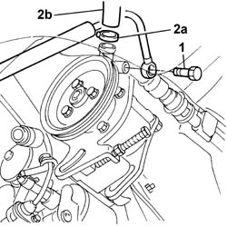
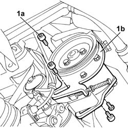
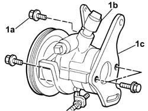
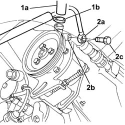
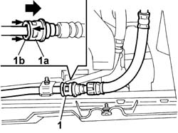
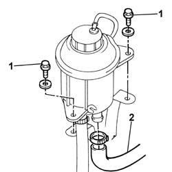
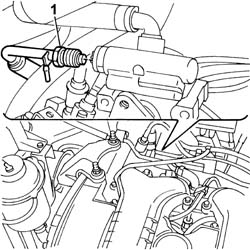
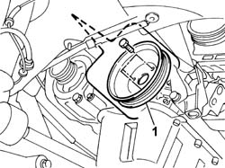
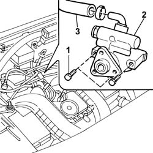

4130B21 power steering pump r r with interfering parts removed
- Path
- Procedures > 41 STEERING UNIT > 4130 POWER STEERING > 4130B POWER STEERING HYDRAULIC SYTEM > 4130B21 power steering pump r r with interfering parts removed
- Kind
- repair procedure (removal / refitting; the operation number is the code)
- Applies to
- engines: 1.2 8v, 1.4 8v, 1.9 DIESEL; all production periods
- Interactive page
- https://sloeber94.github.io/elrnDB-fDbl/en/#/2584725
Applies to: engines: 1.2 8v, 1.4 8v; all production periods
 Removing
Removing
 Refitting
Refitting1. Disconnect the connector for the high pressure fluid supply pipe from the power assisted steering pump to the box.
Place a container under the vehicle and drain the fluid.
2. Disconnect the band (2a) on the pump retaining the fluid supply pipe (2b).

Applies to: engines: 1.2 8v, 1.4 8v; all production periods
1. Undo the bolts (1a) fixing the power assisted steering pump (1b) (already loosened previously) and remove it complete with mounting bracket.

Applies to: engines: 1.2 8v, 1.4 8v; all production periods
1. At the bench, undo the bolts (1a) fixing the power assisted steering pump (1b) to the mounting bracket (1c).

Applies to: engines: 1.2 8v, 1.4 8v; all production periods
Refitting
RemovingAt the bench, fit the power assisted steering pump to the mounting bracket and secure it using the fixing bolts.
 | Fastening | Component | Ø | Value (daNm) |
|---|---|---|---|---|
- | Bolt | POWER STEERING PUMP | M8 x 1.25 | 2.2 |
Position the power assisted steering pump on the vehicle.
Tighten the bolts fixing the power assisted steering pump mounting to the engine.
| Fastening | Component | Ø | Value (daNm) |
|---|---|---|---|---|
- | Bolt | POWER STEERING PUMP SUPPORT/BRACKET | M10 x 1.25 | 5 |
Position the power assisted steering pump belt on the drive pulley.
Fit the guard for the drive belt on the power assisted steering pump.
1. Connect the fluid supply pipe (1a) from the reservoir to the power assisted steering pump and secure it using the band (1b).
2. Connect the connector (2a) for the high pressure supply pipe (2b) to the steering box to the power assisted steering pump and fasten it using the bolt (2c).
| Fastening | Component | Ø | Value (daNm) |
|---|---|---|---|---|
2c | Connector | PIPE BTWN PUMP + POWER STEERING BOX | M16 x 1.5 | 4 |

Applies to: engines: 1.9 DIESEL; all production periods
Removing
RefittingOp. 7055B54 PROTECTION/GUARD UNDER ENGINE - R.R..
1. Disconnect the rapid connector for the return pipe on the heat exchanger pipe, pushing the element (1a) to the left, whilst keeping the element (1b) in position; place a container underneath and drain the power assisted steering fluid.

Applies to: engines: 1.9 DIESEL; all production periods
Lower the lift.
1. Undo the bolts fixing the power assisted steering fluid reservoir to the mounting bracket.
2. Lift up the power assisted steering fluid reservoir and remove the fluid supply pipe to the pump, releasing the retaining band.

Applies to: engines: 1.9 DIESEL; all production periods
1. Undo the connector on the pump for the pressurized fluid supply pipe to the power assisted steering box.

Applies to: engines: 1.9 DIESEL; all production periods
Raise the lift.
Op. 1092A10 CRANKSHAFT PULLEY - R + R.
Op. 1092G14 ENGINE COMPONENT SINGLE BELT MOVING TENSIONER - R + R.
1. Undo the bolts fixing the power assisted steering pump pulley and remove it.

Applies to: engines: 1.9 DIESEL; all production periods
1. Undo the three bolts fixing the power assisted steering pump to the mounting.
Lower the lift.
2. Remove the power assisted steering pump from the engine compartment.
3. Separate the fluid supply pipe from the reservoir from the power assisted steering pump.

Applies to: engines: 1.9 DIESEL; all production periods
Refitting
RemovingFit the fluid supply pipe from the reservoir to the pump.
Position the power assisted steering pump and fasten it to the mounting using the fixing bolts.
| Fastening | Component | Ø | Value (daNm) |
|---|---|---|---|---|
- | Bolt | POWER STEERING PUMP | M8 | 2.5 |
Fit the power assisted steering pump drive pulley.
Complete op. 1092G14.
Complete op. 1092A10.
Lower the lift.
Position the pressurized fluid supply pipe to the power assisted steering box on the power assisted steering pump and tighten the connector.
| Fastening | Component | Ø | Value (daNm) |
|---|---|---|---|---|
- | Connector | PIPE BTWN PUMP + POWER STEERING BOX | M16 x 1.5 | (On power assisted steering pump) 4 |
Fit the fluid supply pipe to the tank on the power assisted steering reservoir and secure it using the band.
Secure the power assisted steering fluid reservoir to the mounting bracket.
| Fastening | Component | Ø | Value (daNm) |
|---|---|---|---|---|
- | Bolt | POWER STEERING FLUID RESERVOIR | M6 | 0.85 |
Raise the lift.
Connect the rapid connector for the return pipe to the reservoir.